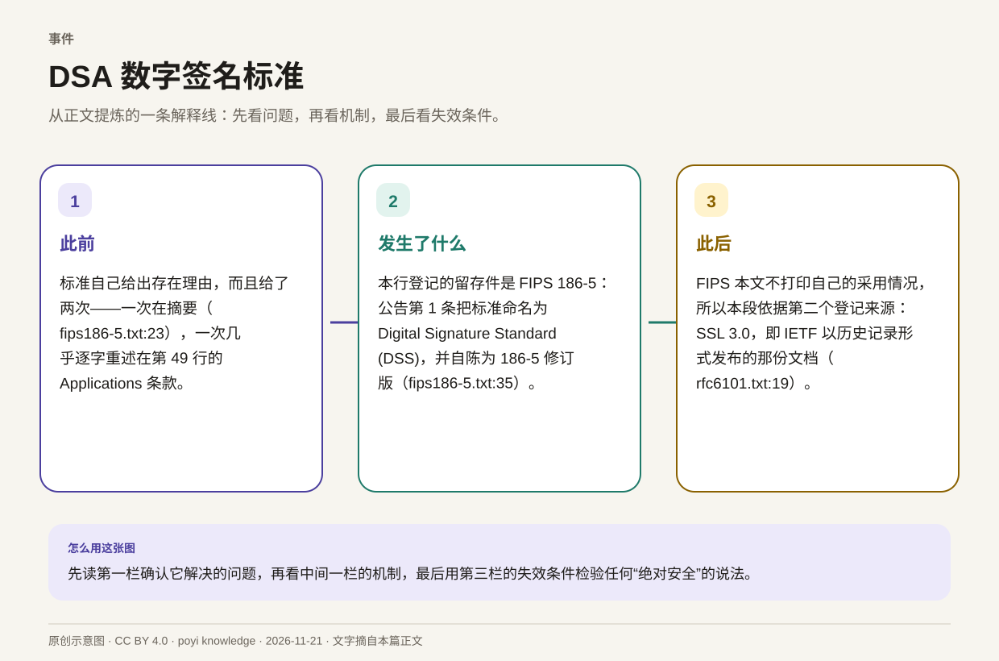
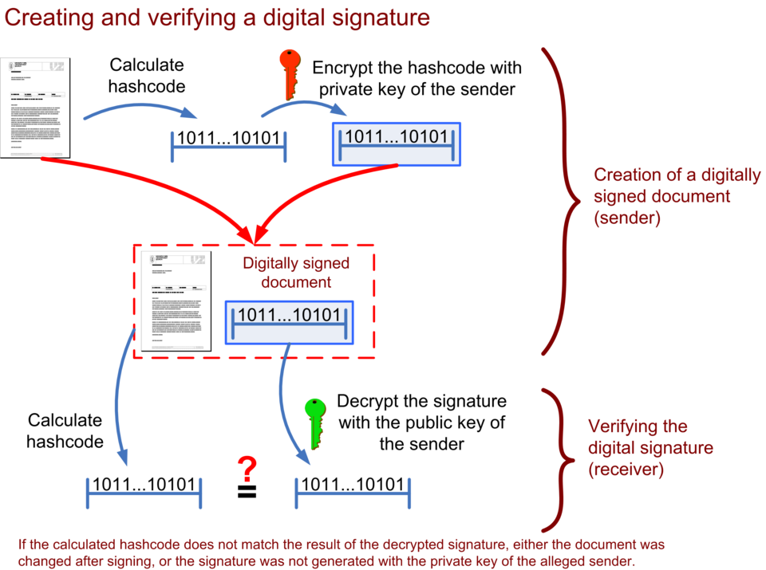

原理与机制
事件：DSA 数字签名标准（Digital Signature Standard）。本行登记的留存件是 FIPS 186-5：公告第 1 条把标准命名为 Digital Signature Standard (DSS)，并自陈为 186-5 修订版（fips186-5.txt:35）；这条名称句把名称、类别与说明挤在同一行里，因此放在引号外陈述。标准做的事印在第 35 行：「This standard specifies algorithms for applications requiring a digital signature rather than a written signature.」（本标准为需要数字签名而非手写签名的应用规定算法）。让任何人都能验签的那组不对称关系在下一行：「Signature generation uses a private key to generate a digital signature; signature verification uses a public key that corresponds to but is not the same as the private key.」（签名生成用私钥产生数字签名；签名验证使用与私钥相对应但并不相同的公钥）；该行后半还说公钥可以为公众所知、私钥必须保密，只有持有私钥者才能执行签名生成。机制的第三件是哈希耦合，见第 37 行：「A hash function is often used in the signature generation process to obtain a condensed version of the data to be signed; the condensed version of the data is often called a message digest.」（签名生成过程中常用哈希函数把待签数据压缩成一个简短版本，这个简短版本通常称为消息摘要）。同一行点明核准的哈希函数来自 FIPS 180 与 FIPS 202，并要求核准的签名算法必须与核准的函数搭配使用——正因如此，这里被标准化的是一套留有算法位置的标准，该条目因而描述标准本身，而不重推 DSA 的算术，那属于 dsa 那一行。

为什么重要
标准自己给出存在理由，而且给了两次——一次在摘要（fips186-5.txt:23），一次几乎逐字重述在第 49 行的 Applications 条款。它要买到的性质是 「Digital signatures are used to detect unauthorized modifications to data and to authenticate the identity of the signatory.」（数字签名用于检出数据被未授权修改，并认证签署者身份）；而那一收束句解释了为什么签名值得被标准化、而不只是被实现：「This is known as non-repudiation since the signatory cannot easily repudiate the signature at a later time.」（这被称为不可否认性，因为签署者事后难以轻易否认该签名）。它为什么是一份 FIPS 而非一篇论文，答案在第 48 行第 6 条：「This standard shall be used in designing and implementing public key-based signature systems that federal departments and agencies operate or that are operated for them under contract.」（联邦部门与机构自行运营或依合同代为运营的公钥签名系统，其设计与实现应使用本标准）；同一条款补充说私营与商业组织也可采用，第 49 行则列出电子邮件、电子资金转移、电子数据交换、软件分发与数据存储等应用。两条读起来像设计规则的约束各占一句：「Agencies are advised that digital signature key pairs shall not be used for other purposes.」（各机构被建议不要将数字签名密钥对用于其他用途）（fips186-5.txt:51，把签名密钥挡在加密之外），以及第 67 行 Qualifications 条款里的 「conformance to this standard does not ensure that a particular implementation is secure.」（符合本标准并不能保证某个具体实现是安全的）。后一条是标准自陈：把算法标准化并不自动产出安全的产品。
应用与实例
该事件用于给数字签名的时间线定位；引用时区分背景、过程、结果与争议，不把逻辑位置写成已确认日期。
边界与攻击面
对本行而言，起作用的边界来自标准自身的撤回，而登记的这份修订版把它说了两遍。第 438 行那个以 The Digital Signature Algorithm (DSA) 为标题的说明节，在第 439 行写道：「Prior versions of this standard specified the DSA.This standard no longer approves the DSA for digital signature generation.」（本标准的早期版本规定过 DSA；本标准不再核准 DSA 用于数字签名生成）。核准一节的表述更具体，见第 124 行：「The Digital Signature Algorithm (DSA) is no longer specified in this standard and may only be used to verify previously generated digital signatures.」（数字签名算法 DSA 已不再由本标准规定，只能用于验证先前已生成的数字签名）；同一行的下一句把读者支往别处：「Complete specifications may be found in Federal Information Processing Standard (FIPS) 186-4 [7].」（完整规定可在 FIPS 186-4 中找到）。因此在这份登记件内部，目录行所命名算法只以可验证的能力留存，其参数已不再印出。文本没印出的东西同样要紧：那两行都没有为 DSA 点出任何攻击、复杂度界、随机数弱条件或密钥长度。逐文件检索显示，DSA 只出现在 :124、:438-439 与 :264 附近的缩略语表里，另有 :517-518 两处 ECDSA 交叉引用——一处称 ECDSA 是 DSA 的椭圆曲线类比，一处引用同时涵盖两者的 RFC 6979——没有参数表，没有强度表，也没有任何密码分析断言。于是该条目只陈述不再核准这一事实即止，不把撤回改写成被攻破；至于仍然存活的那些算法所适用的时间表，属于下一段换一份来源后的证据。
历史与背景
该条目的时间线只保留来源账本能落到年份或时期的节点；年代、机构与版本有争议时并列，不以概述替代一手材料，也不把没有日期的逻辑位置写成事件。

逐步示例与核验
事件时间线模型
背景 → 过程 → 结果 → 争议。背景写此前技术/制度；过程写可核参与者与时间；结果写后续标准、机器、课程或政策；争议写二手叙述与一手材料的差距。
参考出处
- Wikipedia search entry for DSA 数字签名标准. https://zh.wikipedia.org/w/index.php?search=DSA%20%E6%95%B0%E5%AD%97%E7%AD%BE%E5%90%8D%E6%A0%87%E5%87%86
- A Brief History of Cryptology and Cryptographic Algorithms (Dooley, Springer 2013). https://link.springer.com/book/10.1007/978-3-319-01628-3